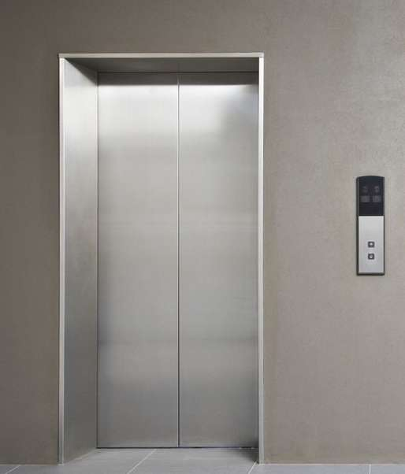
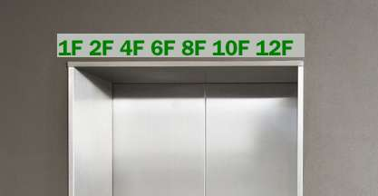
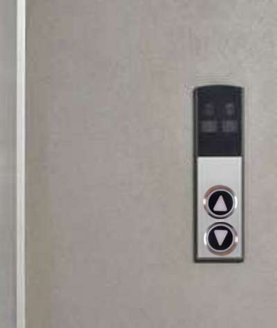
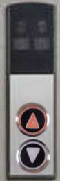
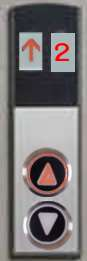
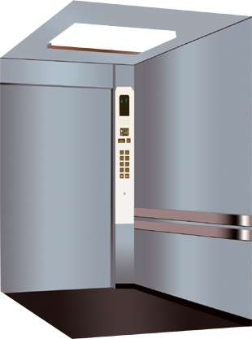
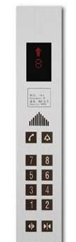
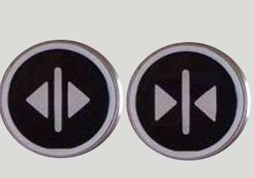

电梯使用操作指南
作者：TeliuTe 来源：基础教程网
电梯使用指南 返回目录电梯是用来上楼或者下楼的，把人带上去或带下去；
1、使用电梯
1）电梯一般在楼道的一头，门框很深、门是银灰色的不锈钢铁皮；

2）楼层中有多个电梯时，会分单层和双层电梯，在门眉上贴有楼层号，可以根据要去的楼层号选电梯；

3）在楼梯门旁边的墙壁上，有一个上楼或下楼的圆按钮，里面有一个三角指向；

4）按其中一个按钮后，里面的指示灯变亮，表示要从当前站的位置上楼或下楼；

5）这时候就站在门外等着电梯过来，注意不要站在电梯门槛里，按钮上面有电梯正在运行的方向和楼层；

6）电梯到门口会打开，如果方向是自己要去的，就可以进去，注意先下后上，里面有出来的人应当让他们先出来；

7）电梯右侧门旁边有一排按钮，进去以后按一下自己要去的楼层，然后找一个地方站好；

8）按钮上方显示电梯的运行状态在几楼，下边有两个开门和关门的按钮，门不关上电梯是不会走的；

9）门关好后电梯开始行进，到楼层时就会停下来打开，注意到自己的楼层再下，别太着急；
本节学习了使用电梯的基础知识，如果你成功地完成了练习，请继续学习下一课内容；
本教程由86团学校TeliuTe制作|著作权所有
基础教程网：http://teliute.org/
美丽的校园……
转载和引用本站内容，请保留版权信息和本站链接。